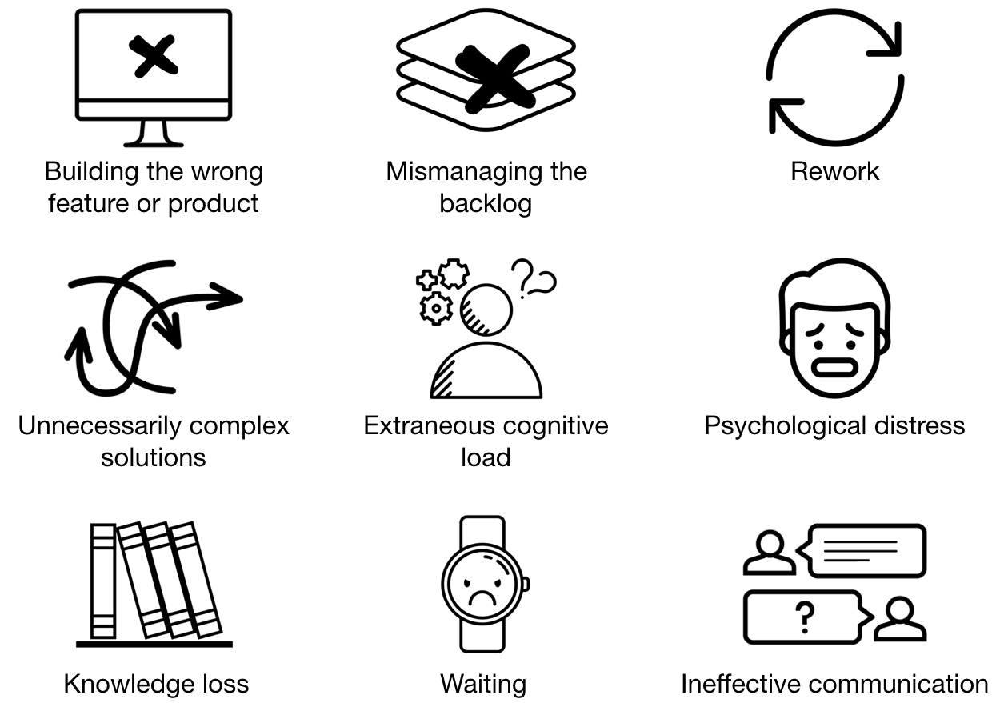

Software Development Wastes

Building the wrong feature or product
Unnecessarily-complicated-or-complex-solution
Additional Wastes in Pre-Agile Projects
Since Pivotal is very lean and agile, it has already eliminated some common types of waste. Professionals using Waterfall, Plan-Driven or other pre-agile approaches may experience waste from unnecessary bureaucracy. Some bureaucracy is necessary to govern (especially large) organizations. However, much bureaucracy is simply pointless and some is actively harmful. Examples include:
Overplanning involves estimating budgets, schedules, phases, milestones or tasks at a level of detail that is not supported by the information at hand, or the stability of the project environment. When a plan requires copious guesses and assumptions, it is a fantasy, not a plan. Overplanning not only wastes the planner’s time but also engenders psychological distress when reality departs from the plan.
Overspecifying involves specifying requirements or design at a level of detail that is not supported by the information at hand. Overspecifying is a common problem in projects with large, up-front requirements and design phases. Warning signs include: 1) copious optional, low-priority or low-confidence requirements; 2) developing an elaborate architecture while stakeholders are still arguing about the goals of the project; 3) fleshing out features that will not be built for months, if ever. Overspecification is not only a waste of time, it can constrain developers, obscure better solutions and reduce creativity.
Performance metrics. Perhaps the main theme to emerge from the study of performance measurement is that measuring performance reduces performance. All metrics can be gamed, and gaming metrics is distracting and time-consuming. Measuring people just motivates them to engage in metric-optimizing theatrics, which are usually less efficient than what they were doing before the metrics. Attempts to quantify performance is therefore not just wasteful but often counterproductive, especially where bonuses are tied to performance (Eichenwald, K. August 2012. Microsoft’s Lost Decade. Vanity Fair. http://www.vanityfair.com/business/2012/08/microsoft-lost-mojo-steve-ballmer).
Pointless documentation. Some documentation is necessary—-even critical—-when documentation helps achieve a specific goal. However, some projects have binders full of documentation that will never be read or will be out of date in a few weeks. Pointless documentation is a form of ineffective communication waste.
Process waste. Processes can be wasteful when they generate pointless documentation (reports, forms, formal requests), pointless meetings (like large company or department-wide meetings, not team meetings), pointless approvals (due to not trusting the people who do the work), and handoffs.
Handoffs. Organizations that divide projects into phases and have different teams involved in different phases of the same project experience handoff waste. Handoff waste is the cost (in knowledge, time, resources and momentum) of passing a project from one team to another. Handoffs contribute to other wastes including knowledge loss, ineffective communication, and waiting.
When following pre-agile practices, two general strategies may help reduce waste. First, hunt for slow-feedback loops. Shortening feedback loops often helps to reduce waste. Second, actively remove the policies responsible for the waste. One problem with bureaucracy is that, once a policy is made, following the policy becomes the bureaucrat’s goal, regardless of the organizational goals the policy was written to support. Waste is the inevitable byproduct of optimal actions for achieving organizational goals diverging from the actions prescribed by flawed or outdated policies.